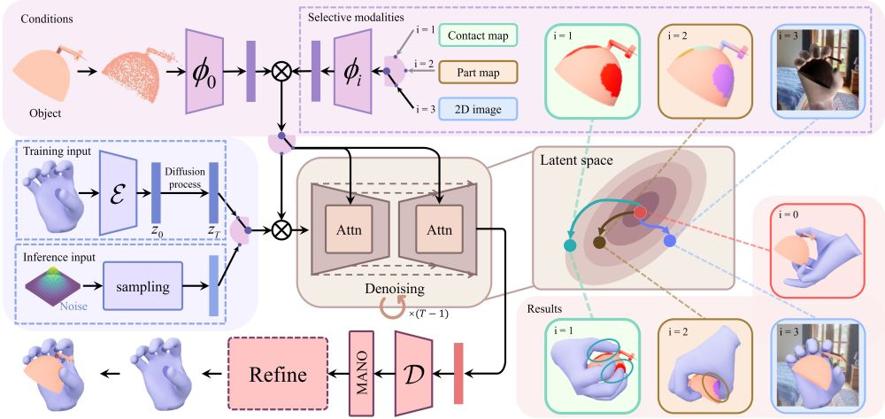
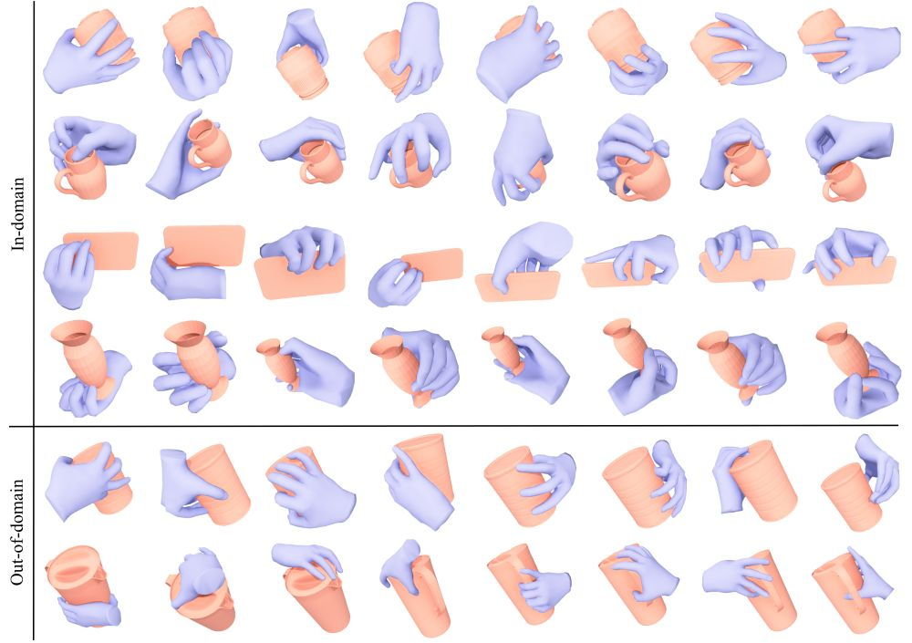
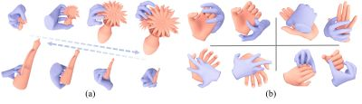
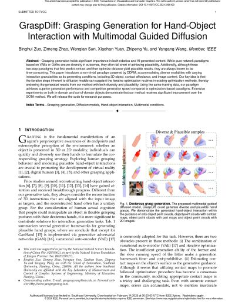

IEEE Transactions on Visualization and Computer Graphics (TVCG), 2024
GraspDiff: Grasping Generation for Hand-Object Interaction with Multimodal Guided Diffusion

Overview of our GraspDiff framework.
We first embed the training data into the latent space with a VAE module and employ the diffusion model to generate hand grasps. Multimodal conditions are considered for varying granularity and are optionally supplemented onto the point clouds. With a frozen VAE decoder, the desired grasps are obtained. A refinement module is also integrated to further improve the plausibility of grasps.Abstract
Grasping generation holds significant importance in both robotics and AI-generated content. While pure network paradigms based on VAEs or GANs ensure diversity in outcomes, they often fall short of achieving plausibility. Additionally, although those two-step paradigms that first predict contact and then optimize distance yield plausible results, they are always known to be time-consuming. This paper introduces a novel paradigm powered by DDPM, accommodating diverse modalities with varying interaction granularities as its generating conditions, including 3D object, contact affordance, and image content. Our key idea is that the iterative steps inherent to diffusion models can supplant the iterative optimization routines in existing optimization methods, thereby endowing the generated results from our method with both diversity and plausibility. Using the same training data, our paradigm achieves superior generation performance and competitive generation speed compared to optimization-based paradigms. Extensive experiments on both in-domain and out-of-domain objects demonstrate that our method receives significant improvement over the SOTA method. We will release the code for research purposes.
Results

We demonstrate 8 sampled grasps of each object. The upper side shows the performance on in-domain objects and the bottom side shows the performance on out-of-domain objects.
Application

(a) As the object scale changes, our method can still generate reasonable grasping poses, which exhibits the robust generation capability for objects with different scales. (b) We generate two-hand interactions on InterHand2.6M and display two views for each interaction.
Materials
|

Related links
|
|
Reference
Binghui Zuo, Zimeng Zhao, Wenqian Sun, Xiaohan Yuan, Zhipeng Yu, and Yangang Wang. "GraspDiff: Grasping Generation for Hand-Object Interaction With Multimodal Guided Diffusion". IEEE Transactions on Visualization and Computer Graphics (TVCG), 2024.
Acknowledgments: This work was supported in part by the National Natural Science Foundation of China (No. 62076061), the Natural Science Foundation of Jiangsu Province (No. BK20220127).
- © 2023 - . Dr. Yangang Wang. All Rights Reserved.